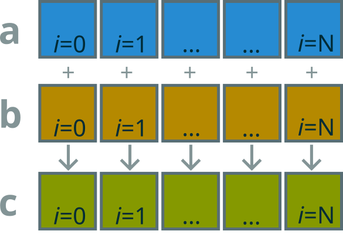
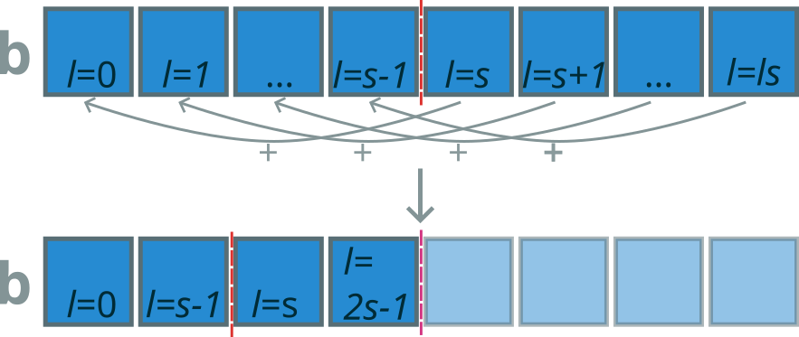

For Graphics


{kind=link}
.png){kind=link}
How a GPU performs calculations
- GPUs are separate devices, you enqueue kernels on inputs
- Stream processors — kernels are applied to the whole data
- GPU coordinates many cores to apply the same kernel to elements of the input
- Outputs can be copied back to the host
In relation to other Paradigms
Sequential
a = rand(N)
b = rand(N)
for i = 1:N
a[i] = a[i] + b[i]
end
Vectorisation and SIMD
a = rand(N)
b = rand(N)
a .+= b
using CUDA
a_d = CUDA.rand(N)
b_d = CUDA.rand(N)
@cuda threads=256 gpu_add!(a_d, b_d)
Kernel 1: Vector Addition
\[\mathbf{c}_{i}=\mathbf{a}_{i}+\mathbf{b}_{i}\]
__kernel void vadd(
__global const float* a,
__global const float* b,
__global float* c
) {
// Get global dimension 0 (of 3)
int i = get_global_id(0);
// Add elements i of a and b
// store in c
c[i] = a[i] + b[i];
}

Kernel 2: Matrix Multiplication
\[\mathbf{c}_{ij} = \sum_{k=1}^{n} a_{ik}b_{kj}\]
__kernel void matmul(
const int i_max, const int k_max,
const __global float* A, const __global float* B,
__global float* C
) {
// Get two global dimensions
const int i = get_global_id(0);
const int j = get_global_id(1);
// Calculate element ij of C
float acc = 0.0f;
for (int k=0; k < k_max; k++) {
// Column major elements
acc += A[k*i_max + i] * B[j*k_max + k];
}
// Store the result
C[i*i_max + j] = acc;
}
Kernel 3: Sum Reduction
\[b = \sum_{i=0}^{N} a_{i}\]

__kernel void sum(
__global float* a, __local float* b,
__global float* partials
) {
int gid = get_global_id(0);
int lid = get_local_id(0);
int lsize = get_local_size(0);
int wg = get_group_id(0);
// Copy to local memory
b[lid] = a[gid];
barrier(CLK_LOCAL_MEM_FENCE);
// Reduction within work group, sum is left in b[0]
for (int stride=lsize>>1; stride>0; stride>>=1) {
if (lid < stride) {
b[lid] += b[lid+stride];
}
barrier(CLK_LOCAL_MEM_FENCE);
}
// Local thread 0 copies its work group's sum
// to the result array
if (lid == 0) {
partials[wg] = b[0];
}
}
//
Host Code Example
Adapted from PyOpenCL demo example (License)
import numpy as np
import pyopencl as cl
# Create input on host
a_h = np.random.rand(50000).astype(np.float32)
b_h = np.random.rand(50000).astype(np.float32)
ctx = cl.create_some_context()
queue = cl.CommandQueue(ctx)
# Allocate device memory for inputs
mf = cl.mem_flags
a_d = cl.Buffer(ctx, mf.READ_ONLY | mf.COPY_HOST_PTR,
hostbuf=a_h)
b_d = cl.Buffer(ctx, mf.READ_ONLY | mf.COPY_HOST_PTR,
hostbuf=b_h)
# Compile kernels
prg = cl.Program(ctx, """
__kernel void sum(
__global const float *a_d, __global const float *b_d,
__global float *res_d
) {
int gid = get_global_id(0);
res_d[gid] = a_d[gid] + b_d[gid];
}
""").build()
# Allocate device memory for results
res_d = cl.Buffer(ctx, mf.WRITE_ONLY, a_h.nbytes)
# Enqueue sum kernel
knl = prg.sum
knl(queue, a_h.shape, None, a_d, b_d, res_d)
# Kernel.__call__(queue, global_size, local_size, *args,
# global_offset=None, wait_for=None,
# g_times_l=False, allow_empty_ndrange=False)
# Enqueue copying results back to host, blocking by default
res_h = np.empty_like(a_h)
cl.enqueue_copy(queue, res_h, res_d)
Licenses
PyOpenCL
PyOpenCL is licensed to you under the MIT/X Consortium license:
Copyright (c) 2009-13 Andreas Klöckner and Contributors.
Permission is hereby granted, free of charge, to any person
obtaining a copy of this software and associated documentation
files (the "Software"), to deal in the Software without
restriction, including without limitation the rights to use,
copy, modify, merge, publish, distribute, sublicense, and/or sell
copies of the Software, and to permit persons to whom the
Software is furnished to do so, subject to the following
conditions:
The above copyright notice and this permission notice shall be
included in all copies or substantial portions of the Software.
THE SOFTWARE IS PROVIDED "AS IS", WITHOUT WARRANTY OF ANY KIND,
EXPRESS OR IMPLIED, INCLUDING BUT NOT LIMITED TO THE WARRANTIES
OF MERCHANTABILITY, FITNESS FOR A PARTICULAR PURPOSE AND
NONINFRINGEMENT. IN NO EVENT SHALL THE AUTHORS OR COPYRIGHT
HOLDERS BE LIABLE FOR ANY CLAIM, DAMAGES OR OTHER LIABILITY,
WHETHER IN AN ACTION OF CONTRACT, TORT OR OTHERWISE, ARISING
FROM, OUT OF OR IN CONNECTION WITH THE SOFTWARE OR THE USE OR
OTHER DEALINGS IN THE SOFTWARE.
CUDA.jl
The CUDA.jl package is licensed under the MIT "Expat" License:
Copyright (c) 2019-present: Julia Computing and other contributors
Copyright (c) 2014-2018: Tim Besard
Copyright (c) 2013: Dahua Lin
All Rights Reserved.
Permission is hereby granted, free of charge, to any person obtaining a copy
of this software and associated documentation files (the "Software"), to deal
in the Software without restriction, including without limitation the rights
to use, copy, modify, merge, publish, distribute, sublicense, and/or sell
copies of the Software, and to permit persons to whom the Software is
furnished to do so, subject to the following conditions:
The above copyright notice and this permission notice shall be included in all
copies or substantial portions of the Software.
THE SOFTWARE IS PROVIDED "AS IS", WITHOUT WARRANTY OF ANY KIND, EXPRESS OR
IMPLIED, INCLUDING BUT NOT LIMITED TO THE WARRANTIES OF MERCHANTABILITY,
FITNESS FOR A PARTICULAR PURPOSE AND NONINFRINGEMENT. IN NO EVENT SHALL THE
AUTHORS OR COPYRIGHT HOLDERS BE LIABLE FOR ANY CLAIM, DAMAGES OR OTHER
LIABILITY, WHETHER IN AN ACTION OF CONTRACT, TORT OR OTHERWISE, ARISING FROM,
OUT OF OR IN CONNECTION WITH THE SOFTWARE OR THE USE OR OTHER DEALINGS IN THE
SOFTWARE.